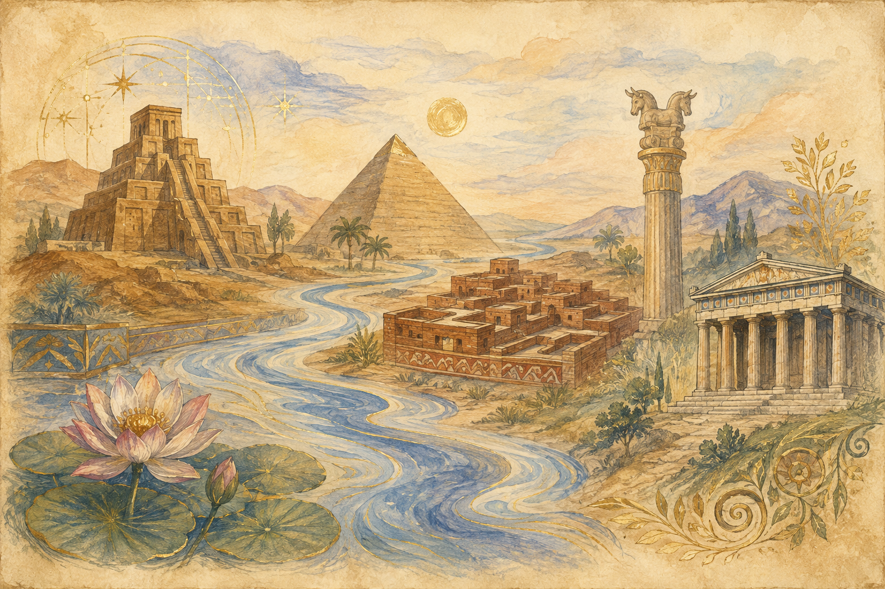

เส้นเวลาแห่งอารยธรรม
แตะจุดบนเส้นเวลาหรือแถบด้านล่างเพื่อเปิดอ่านเรื่องราวของแต่ละอารยธรรม — ทุกแห่งล้วนเกิดริมแม่น้ำใหญ่ที่หล่อเลี้ยงผู้คน
สมุดบทเรียนหลัก · การศึกษาแนววอลดอร์ฟ · ป.5
การเดินทางของมนุษยชาติผ่านห้าอารยธรรมยิ่งใหญ่ — จากลุ่มแม่น้ำสินธุ สู่วิหารพาร์เธนอนแห่งกรีซ

แตะจุดบนเส้นเวลาหรือแถบด้านล่างเพื่อเปิดอ่านเรื่องราวของแต่ละอารยธรรม — ทุกแห่งล้วนเกิดริมแม่น้ำใหญ่ที่หล่อเลี้ยงผู้คน
อ่านผลงานหรือสิ่งประดิษฐ์ แล้วทายว่าเป็นของอารยธรรมไหน